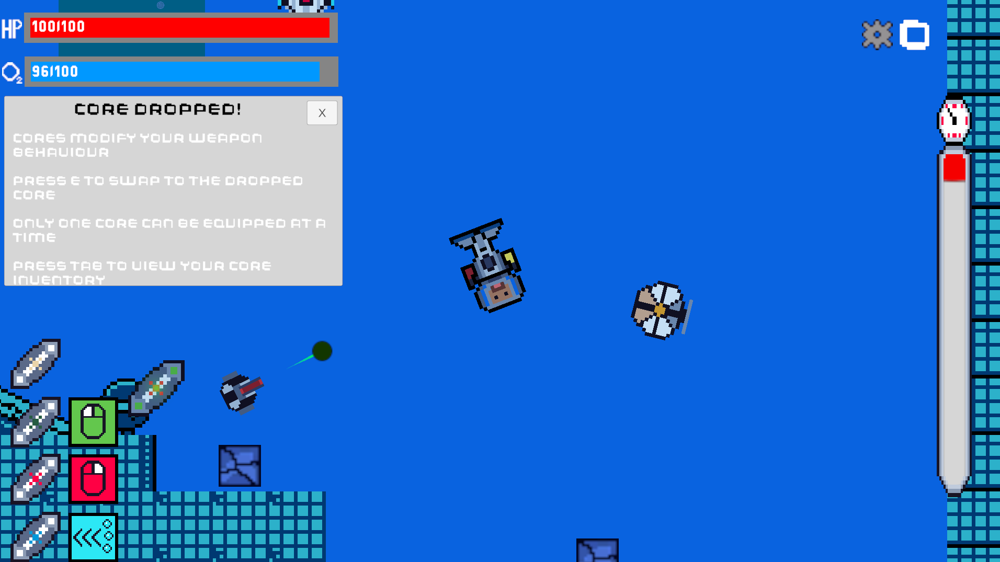
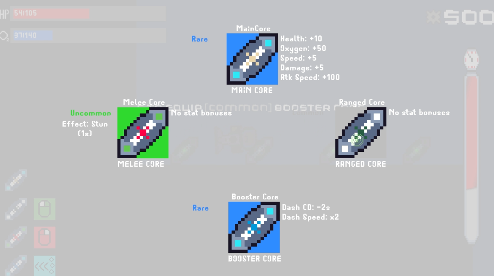

Overview
Abyss Dweller is a solo 2D roguelite capstone where I owned concept, design direction, implementation, and iteration.
Solo Project
A solo capstone roguelite focused on atmosphere, combat systems, player feedback, and readable game feel.
Abyss Dweller is a solo 2D roguelite capstone where I owned concept, design direction, implementation, and iteration.
The project focuses on making moment-to-moment combat feel readable and responsive while supporting a larger roguelite loop.
The biggest challenge was keeping the project scoped while still building enough systems to make the game feel complete and understandable to players.
This project strengthened my ability to break complex systems down, prioritize features, and build gameplay tools that support player understanding.


